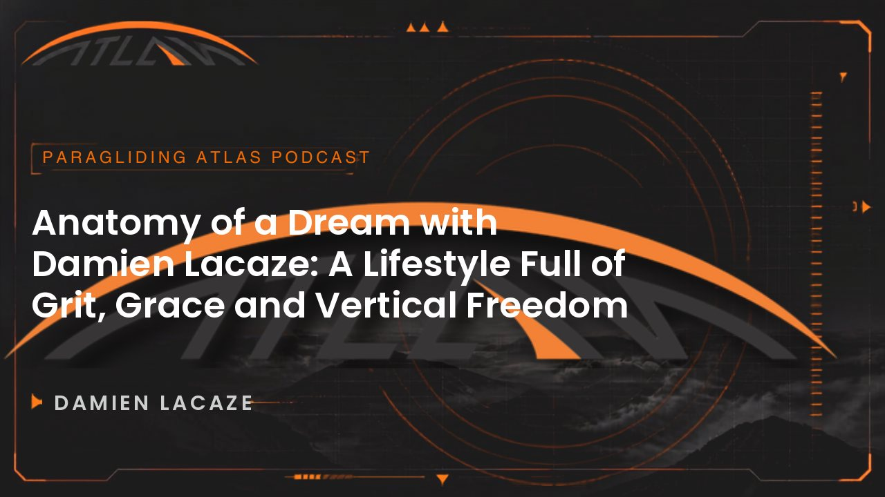
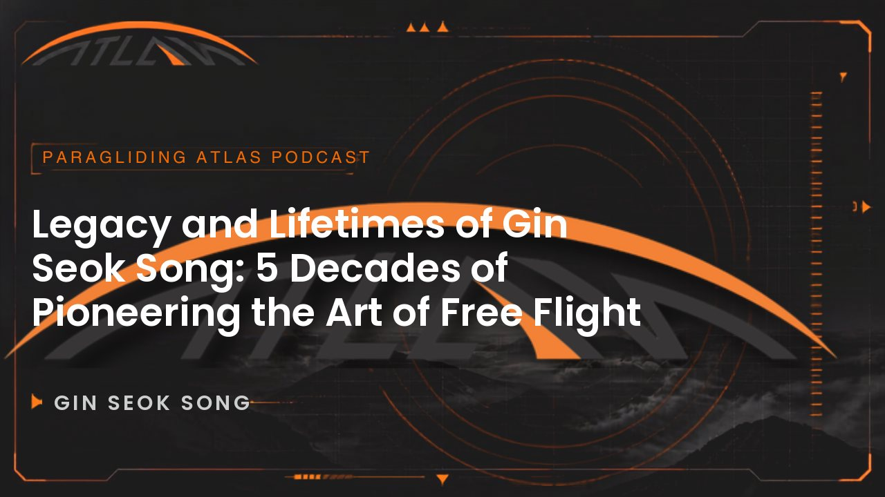
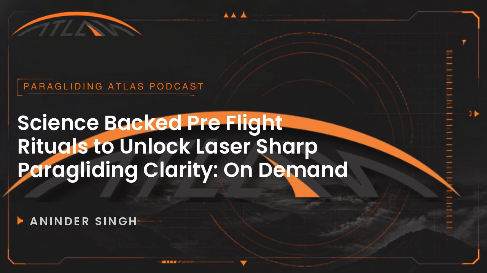
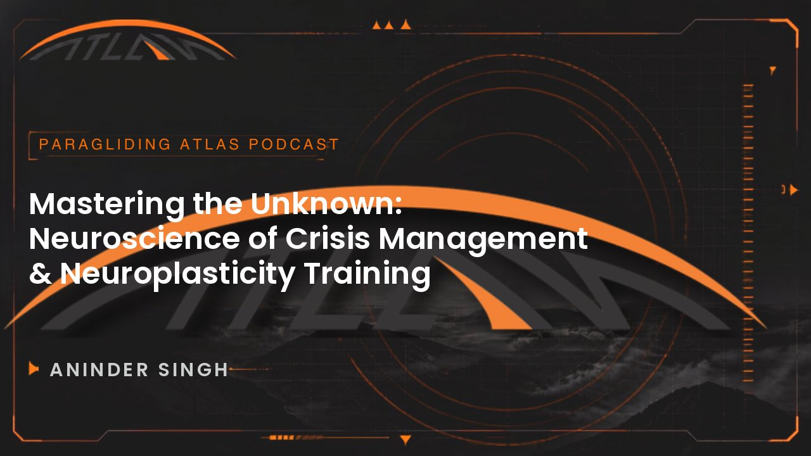

The Paragliding Atlas Podcast
Paragliding podcast episode library
Every conversation we have published, on the art and science of free flight. Search for something specific, or open a series.
86 episodes in 13 series
- Episodes
- 86
- Listening
- 84h 39m
- Chapters
- 764
- Series
- 13
Browse
All episodes
Episode 8073 min 8 September 2026Brett JanawayHow to Thermal Like a Pro: Find, Center & Climb | Paragliding Tutorial with Brett Janaway13 chapters
8 September 2026Brett JanawayHow to Thermal Like a Pro: Find, Center & Climb | Paragliding Tutorial with Brett Janaway13 chapters
 [to supply]SRS Piedrahita BGD Edition Task 2 HighlightsNo chapters yet
Episode 7921 min
[to supply]SRS Piedrahita BGD Edition Task 2 HighlightsNo chapters yet
Episode 7921 min 1 September 2026Luc ArmantLuc Armant talks about The Moment Coefficient, Enzo 3 Certification Debate & Physics of Stability5 chapters
1 September 2026Luc ArmantLuc Armant talks about The Moment Coefficient, Enzo 3 Certification Debate & Physics of Stability5 chapters
 [to supply]SRS Piedrahita BGD Edition Task 1 HighlightsNo chapters yet
Episode 7889 min
[to supply]SRS Piedrahita BGD Edition Task 1 HighlightsNo chapters yet
Episode 7889 min 25 August 2026Brett JanawayTechnical Masterclass by Brett Janaway | Science of Paraglider Trimming,Performance & New Legalities13 chapters
25 August 2026Brett JanawayTechnical Masterclass by Brett Janaway | Science of Paraglider Trimming,Performance & New Legalities13 chapters
 [to supply]SRS BGD Edition 2026 | Day 1: Registration, Pilots & Peñas de Piedrahíta🎉No chapters yet
Episode 77113 min
[to supply]SRS BGD Edition 2026 | Day 1: Registration, Pilots & Peñas de Piedrahíta🎉No chapters yet
Episode 77113 min 19 August 2026113 mins of Unhinged conversations with The Man Behind Ozone ParaglidersRobert (Robbie) Whittall11 chapters
Episode 76109 min
19 August 2026113 mins of Unhinged conversations with The Man Behind Ozone ParaglidersRobert (Robbie) Whittall11 chapters
Episode 76109 min 9 August 2026Beni Kalin & Heli SchrempfMetacognition: Paragliding's Hidden Psychology with Beni Kalin & Heli Schrempf13 chapters
Episode 75132 min
9 August 2026Beni Kalin & Heli SchrempfMetacognition: Paragliding's Hidden Psychology with Beni Kalin & Heli Schrempf13 chapters
Episode 75132 min 29 June 2026Russell OgdenThe Russell Ogden Interview: Decoding Paragliding Mastery Protocols: Progression, Fear & Competition12 chapters
29 June 2026Russell OgdenThe Russell Ogden Interview: Decoding Paragliding Mastery Protocols: Progression, Fear & Competition12 chapters
 [to supply]Task 5 Highlights | 15th Paragliding World Cup Super Final Pegalajar 2026No chapters yet
[to supply]Task 5 Highlights | 15th Paragliding World Cup Super Final Pegalajar 2026No chapters yet
 [to supply]Task 4 Highlights | 15th Paragliding World Cup Super Final Pegalajar 2026No chapters yet
[to supply]Task 4 Highlights | 15th Paragliding World Cup Super Final Pegalajar 2026No chapters yet
 [to supply]Task 2 Highlights | 15th Paragliding World Cup Super Final Pegalajar 2026No chapters yet
[to supply]Task 2 Highlights | 15th Paragliding World Cup Super Final Pegalajar 2026No chapters yet
 [to supply]Task 1 Highlights | 15th Paragliding World Cup Super Final Pegalajar 2026No chapters yet
[to supply]Task 1 Highlights | 15th Paragliding World Cup Super Final Pegalajar 2026No chapters yet
 [to supply]Highlights Day 1 - PWCA Superfinal 2026No chapters yet
Episode 7483 min
[to supply]Highlights Day 1 - PWCA Superfinal 2026No chapters yet
Episode 7483 min 27 April 2026Dr Matt WilkesParagliding Physiology & Safety Protocols | Dr Matt Wilkes Explains: Biophysics in the Art of Flight12 chapters
Episode 739 min
27 April 2026Dr Matt WilkesParagliding Physiology & Safety Protocols | Dr Matt Wilkes Explains: Biophysics in the Art of Flight12 chapters
Episode 739 min 18 April 2026If you fly in the Himalayas, Alps, or above 3000 mtrs, this episode is for youDr Matt Wilkes6 chapters
Episode 729 min
18 April 2026If you fly in the Himalayas, Alps, or above 3000 mtrs, this episode is for youDr Matt Wilkes6 chapters
Episode 729 min 10 April 2026Beni Kalin & Heli SchrempfCognitive Bias of Dunning Kruger Effect in Paragliding | Explained by Beni Kalin & Heli Schrempf3 chapters
Episode 7168 min
10 April 2026Beni Kalin & Heli SchrempfCognitive Bias of Dunning Kruger Effect in Paragliding | Explained by Beni Kalin & Heli Schrempf3 chapters
Episode 7168 min 27 March 2026Yvonne DatheSports Psychology for Paragliding: Train Your Mind to Fly Better with Yvonne Dathe11 chapters
Episode 7050 min
27 March 2026Yvonne DatheSports Psychology for Paragliding: Train Your Mind to Fly Better with Yvonne Dathe11 chapters
Episode 7050 min 20 March 2026From Cuba to Socotra: Inside the World’s Most Unique Paragliding ToursChris Garcia11 chapters
Episode 6949 min
20 March 2026From Cuba to Socotra: Inside the World’s Most Unique Paragliding ToursChris Garcia11 chapters
Episode 6949 min 15 March 2026Shams & OukaHow to Fly With Your Dog | Explained by Shams10 chapters
Episode 6873 min
15 March 2026Shams & OukaHow to Fly With Your Dog | Explained by Shams10 chapters
Episode 6873 min 5 March 2026Nick NeynesSurvived 15 Years of Flying Then a Rescue Helicopter Changed Everything | A Talk With Nick Neynes10 chapters
Episode 6777 min
5 March 2026Nick NeynesSurvived 15 Years of Flying Then a Rescue Helicopter Changed Everything | A Talk With Nick Neynes10 chapters
Episode 6777 min 29 January 2026From Tents to Trophies: Understanding Acro Champion's Mindset on Ego, Glory & DrugsLuke De Weert11 chapters
Episode 6692 min
29 January 2026From Tents to Trophies: Understanding Acro Champion's Mindset on Ego, Glory & DrugsLuke De Weert11 chapters
Episode 6692 min 7 January 2026Tom LoliesTom Lolies Explains The Science Of Wing Design and Evolution from ENC to CSC12 chapters
Episode 6565 min
7 January 2026Tom LoliesTom Lolies Explains The Science Of Wing Design and Evolution from ENC to CSC12 chapters
Episode 6565 min 26 December 2025Jake HollandThe Art of Capturing Human Flight | Jake Holland's Guide to Filming Passion Projects in Paragliding10 chapters
Episode 6474 min
26 December 2025Jake HollandThe Art of Capturing Human Flight | Jake Holland's Guide to Filming Passion Projects in Paragliding10 chapters
Episode 6474 min 16 December 2025Scoring in Paragliding Competitions: A New Pilot's Guide to the GAP Formula & StrategyJoerg Ewald12 chapters
16 December 2025Scoring in Paragliding Competitions: A New Pilot's Guide to the GAP Formula & StrategyJoerg Ewald12 chapters
 [to supply]Urs HaariCan we Steer a Round Reserve Parachute? Urs Haari Answers!No chapters yet
Episode 6267 min
[to supply]Urs HaariCan we Steer a Round Reserve Parachute? Urs Haari Answers!No chapters yet
Episode 6267 min 4 December 2025Zsolt EroWatch this Before you Buy a Paragliding Harness | A Talk with Zsolt Ero12 chapters
Episode 6175 min
4 December 2025Zsolt EroWatch this Before you Buy a Paragliding Harness | A Talk with Zsolt Ero12 chapters
Episode 6175 min 20 November 2025Brett JanawayThe Inside Story of Sports Racing Series (SRS) by Brett Janaway10 chapters
Episode 6086 min
20 November 2025Brett JanawayThe Inside Story of Sports Racing Series (SRS) by Brett Janaway10 chapters
Episode 6086 min 11 November 2025The Unfiltered Truth About Paragliding GovernanceBill Hughes & Goran Dimiskovski10 chapters
Episode 5976 min
11 November 2025The Unfiltered Truth About Paragliding GovernanceBill Hughes & Goran Dimiskovski10 chapters
Episode 5976 min 29 October 2025The Uncomfortable Truth No One is Talking about in the Current Safety ParadoxBill Belcourt10 chapters
Episode 5828 min
29 October 2025The Uncomfortable Truth No One is Talking about in the Current Safety ParadoxBill Belcourt10 chapters
Episode 5828 min 23 October 2025Bruce GoldsmithBruce Goldsmith explains MRT scoring system and its impact on Paragliding Competitions7 chapters
Episode 5740 min
23 October 2025Bruce GoldsmithBruce Goldsmith explains MRT scoring system and its impact on Paragliding Competitions7 chapters
Episode 5740 min 19 October 2025Luc ArmantLuc Armant talks about Debunking the Myths and Upgrading Enzo 38 chapters
Episode 5690 min
19 October 2025Luc ArmantLuc Armant talks about Debunking the Myths and Upgrading Enzo 38 chapters
Episode 5690 min 10 October 2025Tilen Ceglar & Stan RadzikowskiInsights From The Gaggle with Tilen Ceglar & Stan Radzikowski9 chapters
Episode 5568 min
10 October 2025Tilen Ceglar & Stan RadzikowskiInsights From The Gaggle with Tilen Ceglar & Stan Radzikowski9 chapters
Episode 5568 min 4 October 2025Pal TakatsPal Takats on Challenges, Change & The Future of Paragliding 10 chapters
Episode 5429 min
4 October 2025Pal TakatsPal Takats on Challenges, Change & The Future of Paragliding 10 chapters
Episode 5429 min 26 September 2025Julien GarciaWhat is #CIVLRESIGN with Julien Garcia4 chapters
Episode 4972 min
26 September 2025Julien GarciaWhat is #CIVLRESIGN with Julien Garcia4 chapters
Episode 4972 min 17 July 2025Roman BarthelemyUnderstanding Skymate: Paragliding Worlds First AI Driven Smart Harness System with Roman Barthelemy13 chapters
Episode 4740 min
17 July 2025Roman BarthelemyUnderstanding Skymate: Paragliding Worlds First AI Driven Smart Harness System with Roman Barthelemy13 chapters
Episode 4740 min 10 July 2025Erlend UkvitneThe Resilience Equation: Erlend Ukvitne’s Unrelenting Path to X-Alps and the Brink of a World Record9 chapters
Episode 4563 min
10 July 2025Erlend UkvitneThe Resilience Equation: Erlend Ukvitne’s Unrelenting Path to X-Alps and the Brink of a World Record9 chapters
Episode 4563 min 27 June 2025Will GaddConsequence Over Probability: Will Gadd on Why True Safety Lies in Clarity13 chapters
Episode 4478 min
27 June 2025Will GaddConsequence Over Probability: Will Gadd on Why True Safety Lies in Clarity13 chapters
Episode 4478 min 21 June 2025Michael NeslerWhy Paragliding’s Safety Future Looks Different: RAST Inventor Michael Nesler & the LeelooX Effect13 chapters
Episode 43102 min
21 June 2025Michael NeslerWhy Paragliding’s Safety Future Looks Different: RAST Inventor Michael Nesler & the LeelooX Effect13 chapters
Episode 43102 min 12 June 2025The Silent Mind In Screaming Winds : Unlocking Peak Focus To Attain Flow State In ParaglidingGrant Smith12 chapters
Episode 4271 min
12 June 2025The Silent Mind In Screaming Winds : Unlocking Peak Focus To Attain Flow State In ParaglidingGrant Smith12 chapters
Episode 4271 min 1 May 2025Meteorology 101: A beginner’s Guide to Understanding Weather Apps and Decoding Endless Forecasting OptionsIvelin Kalushkov13 chapters
Episode 41166 min
1 May 2025Meteorology 101: A beginner’s Guide to Understanding Weather Apps and Decoding Endless Forecasting OptionsIvelin Kalushkov13 chapters
Episode 41166 min 24 April 2025The Real Truth About Reserve Parachutes: A Paragliding Survival GuideUrs Haari13 chapters
Episode 4053 min
24 April 2025The Real Truth About Reserve Parachutes: A Paragliding Survival GuideUrs Haari13 chapters
Episode 4053 min 17 April 2025Shane TigheShane Tighe’s Road to X-Alps : Engineering Conquests In The Sky from Australia’s Flatlands to the Pinnacle of Hike and Fly7 chapters
Episode 3994 min
17 April 2025Shane TigheShane Tighe’s Road to X-Alps : Engineering Conquests In The Sky from Australia’s Flatlands to the Pinnacle of Hike and Fly7 chapters
Episode 3994 min 11 April 2025Paragliding’s Slovenian Mavericks Redefining the EN B Class And Elevating Free Flight PerformanceAljaž Valič13 chapters
Episode 3843 min
11 April 2025Paragliding’s Slovenian Mavericks Redefining the EN B Class And Elevating Free Flight PerformanceAljaž Valič13 chapters
Episode 3843 min 6 April 2025Vol Biv & Freedom Unfiltered : A Human-Powered Odyssey By Paragliding, Biking & Sailing Around The GlobeSandrine Roy6 chapters
Episode 3796 min
6 April 2025Vol Biv & Freedom Unfiltered : A Human-Powered Odyssey By Paragliding, Biking & Sailing Around The GlobeSandrine Roy6 chapters
Episode 3796 min 10 March 2025The Science of EN Certifications: How Work Group 6 Shaped Paragliding Testing, Innovation & SafetyAlain Zoller13 chapters
Episode 3651 min
10 March 2025The Science of EN Certifications: How Work Group 6 Shaped Paragliding Testing, Innovation & SafetyAlain Zoller13 chapters
Episode 3651 min 24 February 2025Finest Paragliding Reviews & Superpower of Changing Wings as A HumanZiad Bassil11 chapters
Episode 3564 min
24 February 2025Finest Paragliding Reviews & Superpower of Changing Wings as A HumanZiad Bassil11 chapters
Episode 3564 min 30 January 2025Storytime : Chasing Adventure With the Real OG John Silvester & 3 Decades of Making Memories Across The GlobeEddie Colfox12 chapters
Episode 3464 min
30 January 2025Storytime : Chasing Adventure With the Real OG John Silvester & 3 Decades of Making Memories Across The GlobeEddie Colfox12 chapters
Episode 3464 min 24 January 2025Identifying Passion Vs Obsession: An Aviator’s Approach to Overcoming Adversity, Rebuilding Trust and Finding Joy in the SkiesAshutosh Chopra7 chapters
Episode 33101 min
24 January 2025Identifying Passion Vs Obsession: An Aviator’s Approach to Overcoming Adversity, Rebuilding Trust and Finding Joy in the SkiesAshutosh Chopra7 chapters
Episode 33101 min 17 January 2025Building a Healthy Relationship with the Skies: How to Master Fear, Build Resilience & Find Joy Through ParaglidingKinga Masztalerz12 chapters
Episode 3280 min
17 January 2025Building a Healthy Relationship with the Skies: How to Master Fear, Build Resilience & Find Joy Through ParaglidingKinga Masztalerz12 chapters
Episode 3280 min 10 January 2025Modernizing SIV Courses: How This New Training Method Can Help You Master Glider Control and Improve Paragliding SafetyHelmut Schrempf10 chapters
Episode 3056 min
10 January 2025Modernizing SIV Courses: How This New Training Method Can Help You Master Glider Control and Improve Paragliding SafetyHelmut Schrempf10 chapters
Episode 3056 min 29 December 2024Marko MilutinovicStorytellers : Marko Milutinovic (Mid-Air Collision)9 chapters
Episode 2876 min
29 December 2024Marko MilutinovicStorytellers : Marko Milutinovic (Mid-Air Collision)9 chapters
Episode 2876 min 14 December 2024Andreas LattnerFlying & Filming 3 : Andreas Lattner (hochzwei.media)13 chapters
Episode 2763 min
14 December 2024Andreas LattnerFlying & Filming 3 : Andreas Lattner (hochzwei.media)13 chapters
Episode 2763 min 7 December 2024Flying & Filming 2Benjamin Kellet9 chapters
Episode 26101 min
7 December 2024Flying & Filming 2Benjamin Kellet9 chapters
Episode 26101 min 22 November 2024Gabriel OrsiniRisk Vs Reward 5 : Gabriel Orsini (partytillimpact)13 chapters
Episode 2547 min
22 November 2024Gabriel OrsiniRisk Vs Reward 5 : Gabriel Orsini (partytillimpact)13 chapters
Episode 2547 min 15 November 2024Helmet Safety : ICARO 2000Christian Ciech11 chapters
Episode 2457 min
15 November 2024Helmet Safety : ICARO 2000Christian Ciech11 chapters
Episode 2457 min 7 November 2024Risk Vs Reward 4Raúl Rodríguez7 chapters
Episode 2363 min
7 November 2024Risk Vs Reward 4Raúl Rodríguez7 chapters
Episode 2363 min 13 October 2024Brand StoriesEric Roussel12 chapters
Episode 2217 min
13 October 2024Brand StoriesEric Roussel12 chapters
Episode 2217 min 6 October 2024Finsterwalder & CharlyCarabiner Fatigue : Finsterwalder & Charly (whitepaper)4 chapters
Episode 2149 min
6 October 2024Finsterwalder & CharlyCarabiner Fatigue : Finsterwalder & Charly (whitepaper)4 chapters
Episode 2149 min 1 October 2024Flying & Filming 1Benjamin Jordan7 chapters
Episode 2049 min
1 October 2024Flying & Filming 1Benjamin Jordan7 chapters
Episode 2049 min 25 September 2024Living The DreamBenjamin Jordan6 chapters
Episode 1959 min
25 September 2024Living The DreamBenjamin Jordan6 chapters
Episode 1959 min 14 September 2024Risk Vs Reward 3Manfred Ruhmer10 chapters
Episode 1856 min
14 September 2024Risk Vs Reward 3Manfred Ruhmer10 chapters
Episode 1856 min 6 September 2024Risk Vs Reward 2Subir Sidhu11 chapters
Episode 1765 min
6 September 2024Risk Vs Reward 2Subir Sidhu11 chapters
Episode 1765 min 29 August 2024Risk Vs Reward 1Philipp Zellner11 chapters
Episode 1659 min
29 August 2024Risk Vs Reward 1Philipp Zellner11 chapters
Episode 1659 min 22 August 2024Veselin OvcharovNew Technologies 4 : Veselin Ovcharov (Fly The Earth)11 chapters
Episode 1482 min
22 August 2024Veselin OvcharovNew Technologies 4 : Veselin Ovcharov (Fly The Earth)11 chapters
Episode 1482 min 30 May 2024Guillem Batlle & Adrià GrauNew Technologies 2 : Guillem Batlle & Adrià Grau (Niviuk Paragliders)13 chapters
Episode 1386 min
30 May 2024Guillem Batlle & Adrià GrauNew Technologies 2 : Guillem Batlle & Adrià Grau (Niviuk Paragliders)13 chapters
Episode 1386 min 10 March 2024Beni KälinNew Technologies 1 : Beni Kälin (speedflyingschool.com)13 chapters
Episode 1272 min
10 March 2024Beni KälinNew Technologies 1 : Beni Kälin (speedflyingschool.com)13 chapters
Episode 1272 min 6 March 2024PWC LifestyleKlaudia Bulgakow9 chapters
Episode 1197 min
6 March 2024PWC LifestyleKlaudia Bulgakow9 chapters
Episode 1197 min 25 February 2024PWCAGoran Dimiskovski13 chapters
Episode 1052 min
25 February 2024PWCAGoran Dimiskovski13 chapters
Episode 1052 min 12 February 2024Pre PWC KenyaNikolay Yotov9 chapters
Episode 954 min
12 February 2024Pre PWC KenyaNikolay Yotov9 chapters
Episode 954 min 7 January 2024Navigating Panchgani (Pre PWC India)Vistasp Kharas12 chapters
Episode 815 min
7 January 2024Navigating Panchgani (Pre PWC India)Vistasp Kharas12 chapters
Episode 815 min 3 January 2024AMA #1Aninder SinghNo chapters yet
Episode 782 min
3 January 2024AMA #1Aninder SinghNo chapters yet
Episode 782 min 24 December 2023Navigating AustraliaGodfrey Wenness13 chapters
Episode 6108 min
24 December 2023Navigating AustraliaGodfrey Wenness13 chapters
Episode 6108 min 17 December 2023Sky Gods : Flying to WinHonorin Hamard11 chapters
Episode 567 min
17 December 2023Sky Gods : Flying to WinHonorin Hamard11 chapters
Episode 567 min 10 December 2023Sky Gods : Flying 8000ersAntoine Girard13 chapters
Episode 436 min
10 December 2023Sky Gods : Flying 8000ersAntoine Girard13 chapters
Episode 436 min 2 December 2023Jigish GohilNavigating India: Jigish Gohil (Bonus Ep)8 chapters
Episode 352 min
2 December 2023Jigish GohilNavigating India: Jigish Gohil (Bonus Ep)8 chapters
Episode 352 min 26 November 2023Navigating IndiaEddie Colfox7 chapters
Episode 273 min
26 November 2023Navigating IndiaEddie Colfox7 chapters
Episode 273 min 20 November 2023Navigating ColombiaPal Takats13 chapters
Episode 635 min
20 November 2023Navigating ColombiaPal Takats13 chapters
Episode 635 min Audio only11 December 2025Urs HaariSnippet: A Reserve Parachute Trick Every Pilot Should Know, by Urs Haari1 chapter
Episode 5363 min
Audio only11 December 2025Urs HaariSnippet: A Reserve Parachute Trick Every Pilot Should Know, by Urs Haari1 chapter
Episode 5363 min Audio only23 August 2025Bryan Van OstheimDemystifying The Science Behind Endless Fun Factor of Parakites With Bryan Van Ostheim11 chapters
Episode 5157 min
Audio only23 August 2025Bryan Van OstheimDemystifying The Science Behind Endless Fun Factor of Parakites With Bryan Van Ostheim11 chapters
Episode 5157 min Audio only15 August 2024Stephan StieglerNew Technologies 3 : Stephan Stiegler (AirDesign Paragliders)11 chapters
Audio only15 August 2024Stephan StieglerNew Technologies 3 : Stephan Stiegler (AirDesign Paragliders)11 chapters
8 September 2026Brett JanawayHow to Thermal Like a Pro: Find, Center & Climb | Paragliding Tutorial with Brett Janaway13 chapters
[to supply]SRS Piedrahita BGD Edition Task 2 HighlightsNo chapters yet
Episode 7921 min1 September 2026Luc ArmantLuc Armant talks about The Moment Coefficient, Enzo 3 Certification Debate & Physics of Stability5 chapters
[to supply]SRS Piedrahita BGD Edition Task 1 HighlightsNo chapters yet
Episode 7889 min25 August 2026Brett JanawayTechnical Masterclass by Brett Janaway | Science of Paraglider Trimming,Performance & New Legalities13 chapters
[to supply]SRS BGD Edition 2026 | Day 1: Registration, Pilots & Peñas de Piedrahíta🎉No chapters yet
Episode 77113 min19 August 2026113 mins of Unhinged conversations with The Man Behind Ozone ParaglidersRobert (Robbie) Whittall11 chapters
Episode 76109 min9 August 2026Beni Kalin & Heli SchrempfMetacognition: Paragliding's Hidden Psychology with Beni Kalin & Heli Schrempf13 chapters
Episode 75132 min29 June 2026Russell OgdenThe Russell Ogden Interview: Decoding Paragliding Mastery Protocols: Progression, Fear & Competition12 chapters
[to supply]Task 5 Highlights | 15th Paragliding World Cup Super Final Pegalajar 2026No chapters yet
[to supply]Task 4 Highlights | 15th Paragliding World Cup Super Final Pegalajar 2026No chapters yet
[to supply]Task 2 Highlights | 15th Paragliding World Cup Super Final Pegalajar 2026No chapters yet
[to supply]Task 1 Highlights | 15th Paragliding World Cup Super Final Pegalajar 2026No chapters yet
[to supply]Highlights Day 1 - PWCA Superfinal 2026No chapters yet
Episode 7483 min27 April 2026Dr Matt WilkesParagliding Physiology & Safety Protocols | Dr Matt Wilkes Explains: Biophysics in the Art of Flight12 chapters
Episode 739 min18 April 2026If you fly in the Himalayas, Alps, or above 3000 mtrs, this episode is for youDr Matt Wilkes6 chapters
Episode 729 min10 April 2026Beni Kalin & Heli SchrempfCognitive Bias of Dunning Kruger Effect in Paragliding | Explained by Beni Kalin & Heli Schrempf3 chapters
Episode 7168 min27 March 2026Yvonne DatheSports Psychology for Paragliding: Train Your Mind to Fly Better with Yvonne Dathe11 chapters
Episode 7050 min20 March 2026From Cuba to Socotra: Inside the World’s Most Unique Paragliding ToursChris Garcia11 chapters
Episode 6949 min15 March 2026Shams & OukaHow to Fly With Your Dog | Explained by Shams10 chapters
Episode 6873 min5 March 2026Nick NeynesSurvived 15 Years of Flying Then a Rescue Helicopter Changed Everything | A Talk With Nick Neynes10 chapters
Episode 6777 min29 January 2026From Tents to Trophies: Understanding Acro Champion's Mindset on Ego, Glory & DrugsLuke De Weert11 chapters
Episode 6692 min7 January 2026Tom LoliesTom Lolies Explains The Science Of Wing Design and Evolution from ENC to CSC12 chapters
Episode 6565 min26 December 2025Jake HollandThe Art of Capturing Human Flight | Jake Holland's Guide to Filming Passion Projects in Paragliding10 chapters
Episode 6474 min16 December 2025Scoring in Paragliding Competitions: A New Pilot's Guide to the GAP Formula & StrategyJoerg Ewald12 chapters
[to supply]Urs HaariCan we Steer a Round Reserve Parachute? Urs Haari Answers!No chapters yet
Episode 6267 min4 December 2025Zsolt EroWatch this Before you Buy a Paragliding Harness | A Talk with Zsolt Ero12 chapters
Episode 6175 min20 November 2025Brett JanawayThe Inside Story of Sports Racing Series (SRS) by Brett Janaway10 chapters
Episode 6086 min11 November 2025The Unfiltered Truth About Paragliding GovernanceBill Hughes & Goran Dimiskovski10 chapters
Episode 5976 min29 October 2025The Uncomfortable Truth No One is Talking about in the Current Safety ParadoxBill Belcourt10 chapters
Episode 5828 min23 October 2025Bruce GoldsmithBruce Goldsmith explains MRT scoring system and its impact on Paragliding Competitions7 chapters
Episode 5740 min19 October 2025Luc ArmantLuc Armant talks about Debunking the Myths and Upgrading Enzo 38 chapters
Episode 5690 min10 October 2025Tilen Ceglar & Stan RadzikowskiInsights From The Gaggle with Tilen Ceglar & Stan Radzikowski9 chapters
Episode 5568 min4 October 2025Pal TakatsPal Takats on Challenges, Change & The Future of Paragliding 10 chapters
Episode 5429 min26 September 2025Julien GarciaWhat is #CIVLRESIGN with Julien Garcia4 chapters
Episode 4972 min17 July 2025Roman BarthelemyUnderstanding Skymate: Paragliding Worlds First AI Driven Smart Harness System with Roman Barthelemy13 chapters
Episode 4740 min10 July 2025Erlend UkvitneThe Resilience Equation: Erlend Ukvitne’s Unrelenting Path to X-Alps and the Brink of a World Record9 chapters
Episode 4563 min27 June 2025Will GaddConsequence Over Probability: Will Gadd on Why True Safety Lies in Clarity13 chapters
Episode 4478 min21 June 2025Michael NeslerWhy Paragliding’s Safety Future Looks Different: RAST Inventor Michael Nesler & the LeelooX Effect13 chapters
Episode 43102 min12 June 2025The Silent Mind In Screaming Winds : Unlocking Peak Focus To Attain Flow State In ParaglidingGrant Smith12 chapters
Episode 4271 min1 May 2025Meteorology 101: A beginner’s Guide to Understanding Weather Apps and Decoding Endless Forecasting OptionsIvelin Kalushkov13 chapters
Episode 41166 min24 April 2025The Real Truth About Reserve Parachutes: A Paragliding Survival GuideUrs Haari13 chapters
Episode 4053 min17 April 2025Shane TigheShane Tighe’s Road to X-Alps : Engineering Conquests In The Sky from Australia’s Flatlands to the Pinnacle of Hike and Fly7 chapters
Episode 3994 min11 April 2025Paragliding’s Slovenian Mavericks Redefining the EN B Class And Elevating Free Flight PerformanceAljaž Valič13 chapters
Episode 3843 min6 April 2025Vol Biv & Freedom Unfiltered : A Human-Powered Odyssey By Paragliding, Biking & Sailing Around The GlobeSandrine Roy6 chapters
Episode 3796 min10 March 2025The Science of EN Certifications: How Work Group 6 Shaped Paragliding Testing, Innovation & SafetyAlain Zoller13 chapters
Episode 3651 min24 February 2025Finest Paragliding Reviews & Superpower of Changing Wings as A HumanZiad Bassil11 chapters
Episode 3564 min30 January 2025Storytime : Chasing Adventure With the Real OG John Silvester & 3 Decades of Making Memories Across The GlobeEddie Colfox12 chapters
Episode 3464 min24 January 2025Identifying Passion Vs Obsession: An Aviator’s Approach to Overcoming Adversity, Rebuilding Trust and Finding Joy in the SkiesAshutosh Chopra7 chapters
Episode 33101 min17 January 2025Building a Healthy Relationship with the Skies: How to Master Fear, Build Resilience & Find Joy Through ParaglidingKinga Masztalerz12 chapters
Episode 3280 min10 January 2025Modernizing SIV Courses: How This New Training Method Can Help You Master Glider Control and Improve Paragliding SafetyHelmut Schrempf10 chapters
Episode 3056 min29 December 2024Marko MilutinovicStorytellers : Marko Milutinovic (Mid-Air Collision)9 chapters
Episode 2876 min14 December 2024Andreas LattnerFlying & Filming 3 : Andreas Lattner (hochzwei.media)13 chapters
Episode 2763 min7 December 2024Flying & Filming 2Benjamin Kellet9 chapters
Episode 26101 min22 November 2024Gabriel OrsiniRisk Vs Reward 5 : Gabriel Orsini (partytillimpact)13 chapters
Episode 2547 min15 November 2024Helmet Safety : ICARO 2000Christian Ciech11 chapters
Episode 2457 min7 November 2024Risk Vs Reward 4Raúl Rodríguez7 chapters
Episode 2363 min13 October 2024Brand StoriesEric Roussel12 chapters
Episode 2217 min6 October 2024Finsterwalder & CharlyCarabiner Fatigue : Finsterwalder & Charly (whitepaper)4 chapters
Episode 2149 min1 October 2024Flying & Filming 1Benjamin Jordan7 chapters
Episode 2049 min25 September 2024Living The DreamBenjamin Jordan6 chapters
Episode 1959 min14 September 2024Risk Vs Reward 3Manfred Ruhmer10 chapters
Episode 1856 min6 September 2024Risk Vs Reward 2Subir Sidhu11 chapters
Episode 1765 min29 August 2024Risk Vs Reward 1Philipp Zellner11 chapters
Episode 1659 min22 August 2024Veselin OvcharovNew Technologies 4 : Veselin Ovcharov (Fly The Earth)11 chapters
Episode 1482 min30 May 2024Guillem Batlle & Adrià GrauNew Technologies 2 : Guillem Batlle & Adrià Grau (Niviuk Paragliders)13 chapters
Episode 1386 min10 March 2024Beni KälinNew Technologies 1 : Beni Kälin (speedflyingschool.com)13 chapters
Episode 1272 min6 March 2024PWC LifestyleKlaudia Bulgakow9 chapters
Episode 1197 min25 February 2024PWCAGoran Dimiskovski13 chapters
Episode 1052 min12 February 2024Pre PWC KenyaNikolay Yotov9 chapters
Episode 954 min7 January 2024Navigating Panchgani (Pre PWC India)Vistasp Kharas12 chapters
Episode 815 min3 January 2024AMA #1Aninder SinghNo chapters yet
Episode 782 min24 December 2023Navigating AustraliaGodfrey Wenness13 chapters
Episode 6108 min17 December 2023Sky Gods : Flying to WinHonorin Hamard11 chapters
Episode 567 min10 December 2023Sky Gods : Flying 8000ersAntoine Girard13 chapters
Episode 436 min2 December 2023Jigish GohilNavigating India: Jigish Gohil (Bonus Ep)8 chapters
Episode 352 min26 November 2023Navigating IndiaEddie Colfox7 chapters
Episode 273 min20 November 2023Navigating ColombiaPal Takats13 chapters
Episode 635 minAudio only11 December 2025Urs HaariSnippet: A Reserve Parachute Trick Every Pilot Should Know, by Urs Haari1 chapter
Episode 5363 min
Audio only30 August 2025Damien LacazeAnatomy of a Dream with Damien Lacaze: A Lifestyle Full of Grit, Grace and Vertical Freedom11 chapters Episode 5257 minAudio only23 August 2025Bryan Van OstheimDemystifying The Science Behind Endless Fun Factor of Parakites With Bryan Van Ostheim11 chapters
Episode 5157 min
Audio only7 August 2025Gin Seok SongLegacy and Lifetimes of Gin Seok Song: 5 Decades of Pioneering the Art of Free Flight11 chapters Episode 50103 minAudio only31 July 2025The Journey Within : Mapping our Quest to Touch The Sky With GloryMaxime Pinot11 chapters Episode 4816 min
Audio only14 July 2025Science Backed Pre Flight Rituals to Unlock Laser Sharp Paragliding Clarity: On DemandAninder Singh2 chapters Episode 4620 min
Audio only7 July 2025Mastering the Unknown: Neuroscience of Crisis Management & Neuroplasticity TrainingAninder Singh6 chapters Episode 1582 minAudio only15 August 2024Stephan StieglerNew Technologies 3 : Stephan Stiegler (AirDesign Paragliders)11 chapters
Nothing matches those filters. to see every episode.